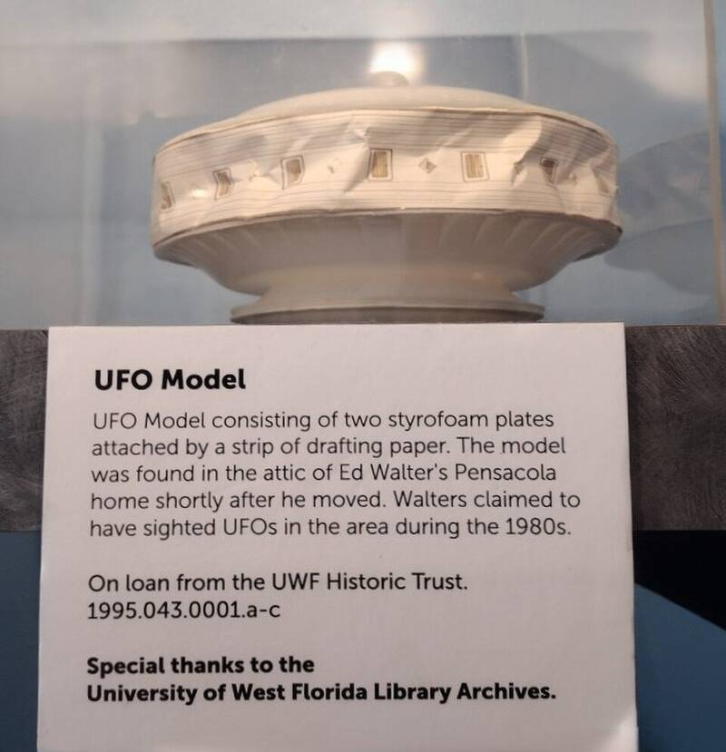

Gulf Breeze photos
Florida, 1987

From November 1987, contractor Ed Walters published Polaroid photos of a glowing craft over Gulf Breeze, and MUFON's director called it the group's best case. In 1990, the new owner of Walters' old house found a model UFO made of foam plates and drafting paper in the attic, and newspaper photographers used it to reproduce some of the photos. Walters said the model was planted. 1
Open in the interactive Watcher
Related
- Bruce Maccabee Person
Sources
- Gulf Breeze UFO incident Wikipedia